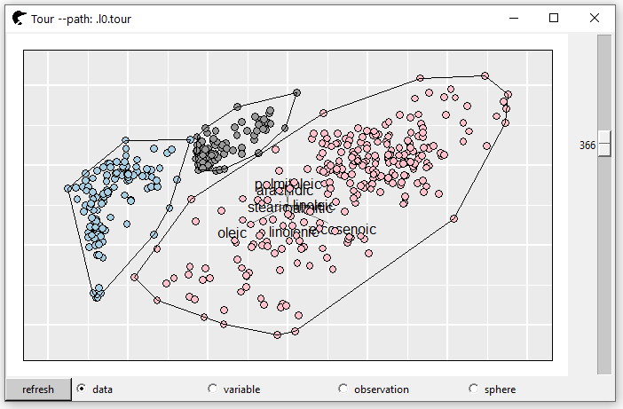
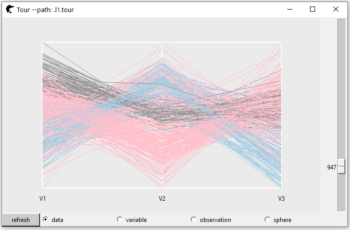
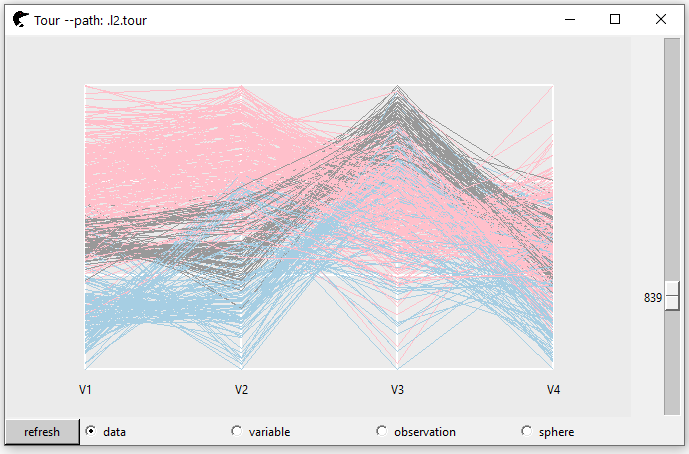
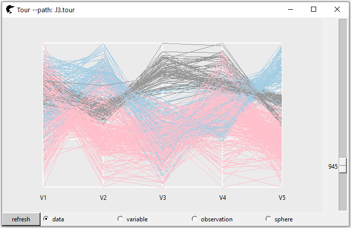

Classification by Tour
Wayne Oldford and Zehao Xu
2021-09-25
Source:vignettes/classification.Rmd
classification.RmdIntroduction
A grand tour “method” is an algorithm for assigning a sequence of projections onto a lower dimensional spaces. After the original multivariate dataset is projected onto some “interesting” plane, a question may be raised here, “what’s next?”
Well, one of the usage could be in “classification.” Rather than putting the original data set into the classifier. Controlling other hyper-parameters, can an interesting projection improve the performance of the prediction? In this vignette, we will learn about it.
Data
The data set olive records the percentage composition of 8 fatty acids (palmitic, palmitoleic, stearic and etc) found in the lipid fraction of 572 Italian olive oils. The oils are samples taken from three Italian regions varying number of areas within each region. The regions and their areas are recorded as shown in the following table (Waddell and Oldford 2020):
| Region | Area |
|---|---|
| North | North-Apulia, South-Apulia, Calabria, Sicily |
| South | East-Liguria, West-Liguria, Umbria |
| Sardinia | Coastal-Sardinia, Inland-Sardinia |
First, we randomly select 80% as the training set and leave the rest 20% as the test set.
set.seed(123)
N <- nrow(olive)
trainId <- sample(seq(N),
size = floor(0.8 * N))
testId <- setdiff(seq(N), trainId)
acids <- setdiff(colnames(olive), c("region", "area"))
trainX <- olive[trainId, acids]
testX <- olive[testId, acids]
trainY <- olive[trainId, "region"]
testY <- olive[testId, "region"]Then, as the magnitude of each variable is very different, to avoid one specific factor dominate the projection, a scaling technique would be provided. In our case, the variable scaling method is applied that each variable is scaled to zero one (the detailed description of different scaling methods can be found in l_tour documentation help("l_tour")).
| palmitic | palmitoleic | stearic | oleic | linoleic | linolenic | arachidic | eicosenoic |
|---|---|---|---|---|---|---|---|
| 1141 | 95 | 250 | 7035 | 1388 | 22 | 68 | 2 |
| 1105 | 30 | 198 | 7995 | 570 | 52 | 20 | 3 |
| 1307 | 197 | 238 | 7003 | 1144 | 37 | 50 | 24 |
| 1070 | 120 | 210 | 7600 | 990 | 0 | 10 | 3 |
| 1347 | 197 | 211 | 6795 | 1300 | 32 | 59 | 34 |
| 1368 | 171 | 218 | 7010 | 1057 | 41 | 54 | 26 |
scalingTrainX <- loon::l_getScaledData(trainX, scaling = "variable")
scalingTestX <- loon::l_getScaledData(testX, scaling = "variable")
kable(head(scalingTrainX), digits = 2)| palmitic | palmitoleic | stearic | oleic | linoleic | linolenic | arachidic | eicosenoic |
|---|---|---|---|---|---|---|---|
| 0.30 | 0.30 | 0.43 | 0.41 | 0.92 | 0.31 | 0.65 | 0.02 |
| 0.26 | 0.06 | 0.19 | 0.93 | 0.12 | 0.74 | 0.19 | 0.04 |
| 0.49 | 0.69 | 0.37 | 0.39 | 0.68 | 0.53 | 0.48 | 0.40 |
| 0.22 | 0.40 | 0.25 | 0.72 | 0.53 | 0.00 | 0.10 | 0.04 |
| 0.54 | 0.69 | 0.25 | 0.27 | 0.83 | 0.46 | 0.56 | 0.58 |
| 0.56 | 0.59 | 0.28 | 0.39 | 0.60 | 0.59 | 0.51 | 0.44 |
Projection Methods
The classifier we used in this vignette is k-nearest neighborhood, knn (Altman 1992).
knn_pred <- function(trainX, trainY, testX, testY, k = c(5, 10, 20)) {
len_test <- length(testY)
vapply(k,
function(num) {
yhat <- class::knn(trainX, testX, trainY, k = num)
sum(yhat == testY)/len_test
}, numeric(1L))
}
low_dim_knn_pred <- function(dims = 2:5, fun,
trainX, trainY, testX, testY,
k = c(5, 10, 20), setNames = TRUE) {
tab <- lapply(dims,
function(d) {
knn_pred(
fun(trainX, d), trainY,
fun(testX, d), testY
)
}) %>%
as.data.frame() %>%
as_tibble()
if(setNames) {
tab <- tab %>%
setNames(nm = paste0("d = ", dims))
}
rownames(tab) <- paste0("k = ", k)
tab
}Method I: p choose k
The most basic projection is that to choose \(d\) dimensional subspace from the \(p\) dimensional space. Since we have 8 dimensions, suppose \(d = 2\), there are \({8 \choose 2} = 28\) combinations. To simplify the process, with each pair, we will only extract the highest prediction accuracy one.
# the number of k
dims <- 2:5
var_names <- colnames(scalingTrainX)
low_dim_names <- c()
K <- ncol(trainX)
pChooseD <- lapply(dims,
function(d) {
com <- combn(K, d)
pred <- apply(com, 2,
function(pair) {
knn_pred(trainX[, pair], trainY,
testX[, pair], testY)
})
mean_pred <- apply(pred, 2, mean)
id <- which.max(mean_pred)
low_dim_names <<- c(low_dim_names,
paste(var_names[com[, id]],
collapse = ":"))
pred[, id]
}) %>%
as.data.frame() %>%
as_tibble() %>%
setNames(nm = paste0("d = ", dims))
rownames(pChooseD) <- paste0("k = ", c(5, 10, 20))The best pair’s name is
names(low_dim_names) <- paste0("d = ", dims)
low_dim_names
#> d = 2
#> "linoleic:eicosenoic"
#> d = 3
#> "linoleic:arachidic:eicosenoic"
#> d = 4
#> "linoleic:linolenic:arachidic:eicosenoic"
#> d = 5
#> "stearic:linoleic:linolenic:arachidic:eicosenoic"The prediction accuracy is
kable(pChooseD, row.names = TRUE,
digits = 3)| d = 2 | d = 3 | d = 4 | d = 5 | |
|---|---|---|---|---|
| k = 5 | 0.974 | 0.983 | 0.991 | 0.991 |
| k = 10 | 0.930 | 0.957 | 0.974 | 0.974 |
| k = 20 | 0.852 | 0.922 | 0.913 | 0.939 |
Method II: PCA
PCA is defined as an orthogonal linear transformation that transforms the data to a new coordinate system such that the greatest variance by some scalar projection of the data comes to lie on the first coordinate (called the first principal component, determined by the largest eigen value), the second greatest variance (the second largest eigen value) on the second coordinate, and so on.
The eigen values of PCA projection on our data set is
trainXPCA <- princomp(scalingTrainX)
testXPCA <- princomp(scalingTestX)
round(trainXPCA$sdev, 2)
#> Comp.1 Comp.2 Comp.3 Comp.4 Comp.5 Comp.6 Comp.7 Comp.8
#> 0.41 0.28 0.20 0.17 0.13 0.10 0.06 0.01The first 5 eigen values are picked, as the sum of them is above 85%.
PCA <- low_dim_knn_pred(2:5,
fun = function(princomp, d)
{princomp$scores[, seq(d)]},
trainXPCA,
trainY,
testXPCA,
testY)
kable(PCA, row.names = TRUE,
digits = 3)| d = 2 | d = 3 | d = 4 | d = 5 | |
|---|---|---|---|---|
| k = 5 | 0.678 | 0.678 | 0.687 | 0.791 |
| k = 10 | 0.670 | 0.696 | 0.704 | 0.800 |
| k = 20 | 0.670 | 0.722 | 0.722 | 0.809 |
Method III: LLE
LLE (Local Linear Embedding) (Roweis and Saul 2000) begins by finding a set of the nearest neighbors of each point, then computes a set of weights for each point that best describes the point as a linear combination of its neighbors. Finally, it uses an eigenvector-based optimization technique to find the low-dimensional embedding of points.
library(RDRToolbox)
lle <- low_dim_knn_pred(2:5,
fun = function(data, d) {
LLE(data, dim = d, k = 5)
},
scalingTrainX, trainY,
scalingTestX, testY)
kable(lle, row.names = TRUE,
digits = 3)| d = 2 | d = 3 | d = 4 | d = 5 | |
|---|---|---|---|---|
| k = 5 | 0.852 | 0.304 | 0.652 | 0.652 |
| k = 10 | 0.852 | 0.165 | 0.730 | 0.722 |
| k = 20 | 0.852 | 0.165 | 0.730 | 0.661 |
Method IV: Random Tour
A simple call l_tour
p2 <- l_tour(scalingTrainX, color = trainY)
l <- l_layer_hull(p2, group = trainY)Here, we assign different groups different colors. Besides, a convex hull is constructed (l_layer_hull) so that the separation of each group is much easier to tell. As we scroll the bar, one random projection can split the groups well (no intersections among the hulls).

The matrix of projection vectors is
proj2D <- p2["projection"]| V1 | V2 | |
|---|---|---|
| palmitic | 0.01 | -0.22 |
| palmitoleic | 0.34 | -0.31 |
| stearic | 0.27 | -0.19 |
| oleic | 0.66 | 0.15 |
| linoleic | -0.38 | -0.52 |
| linolenic | 0.15 | 0.16 |
| arachidic | -0.20 | -0.37 |
| eicosenoic | 0.40 | -0.60 |
Then, we will create 3, 4 and 5 dimension tour paths (by modifying tour_path). The “interesting” projection could be that, on at least one axis, the three groups are split well. For example, in this 3D projection, at the axis V1, the group “gray” is distinguished from the team; at the axis V2, the group “pink” could be told significantly different from the rest; at the axis V3, the “blue” group is popped up.
p3 <- l_tour(scalingTrainX,
tour_path = tourr::grand_tour(3),
color = trainY,
axesLayout = "parallel")
proj3D <- p3["projection"]
p4 <- l_tour(scalingTrainX,
tour_path = tourr::grand_tour(4),
color = trainY,
axesLayout = "parallel")
proj4D <- p4["projection"]
p5 <- l_tour(scalingTrainX,
tour_path = tourr::grand_tour(5),
color = trainY,
axesLayout = "parallel")
proj5D <- p5["projection"]
tour <- low_dim_knn_pred(list(proj2D, proj3D,
proj4D, proj5D),
fun = function(data, proj) {
data %*% as.matrix(proj)
},
scalingTrainX, trainY,
scalingTestX, testY,
setNames = FALSE)
colnames(tour) <- paste0("d = ", 2:5)
kable(tour, row.names = TRUE,
digits = 3)| d = 2 | d = 3 | d = 4 | d = 5 | |
|---|---|---|---|---|
| k = 5 | 0.974 | 0.974 | 0.983 | 0.991 |
| k = 10 | 0.983 | 1.000 | 0.991 | 0.991 |
| k = 20 | 0.983 | 1.000 | 0.991 | 0.983 |
However, sometimes, it is not possible to find a matrix of projection vectors to separate each group perfectly. We need a tool to monitor the classification performance of each projection. A powerful function loon::l_bind_state() could be used. It takes three arguments, target, event and a callback function. If changes are detected for the given event of this target, the callback function will be fired. In our case, suppose it is very difficult to separate the 5D tour, a callback function could be built as
As one scrolls the bar, the accuracy rates of each projection will be displayed in the console. The performance of each projection can be visualized very straightforward. In our scenario, the most “interesting” matrix of projection vectors should be corresponding to the highest accuracy rate.
================= R console =================
> …
> k = 5: accuracy rate 0.991
> k = 10: accuracy rate 0.991
> k = 20: accuracy rate 0.991
> k = 5: accuracy rate 1
> k = 10: accuracy rate 1
> k = 20: accuracy rate 1
> …
============================================
Graphical Summaries
rbind(tour, lle, PCA, pChooseD) %>%
mutate(k = rep(c(5, 10, 20), 4),
method = rep(c("tour", "LLE", "PCA", "pChooseD"), each = 3)) %>%
pivot_longer(cols = -c(k, method),
names_to = "Dimensions",
values_to = "Accuracy") %>%
mutate(Dimensions = parse_number(Dimensions)) %>%
ggplot(mapping = aes(x = Dimensions,
y = Accuracy,
colour = method)) +
geom_path() +
facet_wrap(~k) +
ggtitle("Facet by the number of neibourhoods")
Through this chart we can tell,
In general,
tourhas the best performance. The accuracy of three dimensional tour with 10 or 20 neighbors can be 100%!LLEhas a good prediction asd = 2, nevertheless, as the dimension rises, the performance is worse than that ofPCA.PCAis has a clear monotone increase trend. The more dimensions it included, the more accuracy it could provide.
Conclusion
Pros
In this data set, tour gives the best performance. Even in two dimensional space, the accuracy could be as high as 98.3%. Also, such process is very intuitive.
The loon.tourr also provides several scaling methods, like data (scale to zero one based on the whole data set), variable (scale to zero one based on per column), observation (scale to zero one based on pre row), sphere (PCA). Additionally, users can customize their own scaling methods.
Cons
The process is hard to reproduce. As the projection is randomly generated, it is very arbitrary to find a good projection. Alternatively, refresh button is provided. If none of the existing projections is “interesting.” Press the refresh button and new random projections are created instantaneously.
Computing speed. If the number of observations is large (say 10,000), as we scroll the bar, the points are not rotated smoothly that may affect our identification.
The difficulty of looking for an interesting projection is positively correlated with the number of groups.
The projection is hard to interpret.